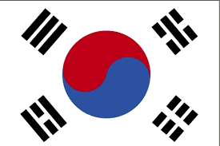

Респу́бліка Коре́я (кор. 대한민국, 大韓民國, техан мінґук, «Велика країна народу хан»), неофіційно відома як Півде́нна Коре́я (кор. 남한) — країна у Східній Азії. Розташована у південній частині Корейського півострова. Межує на півночі з Північною Кореєю. На сході омивається Східним морем (Японським морем), на заході — Жовтим, на півдні — Східно-Китайським морем. Володіє декількома десятками островів, найбільші з яких — Чеджудо, Чедо і Коджедо.
Столиця —
Сеул, «глобальне місто», друга за розміром міська агломерація у світі. Розташована в помірному поясі на переважно гірській місцевості.
Корея — світська держава, в якій Релігія відділена від держави й школи. Конституція Корея гарантує свободу совісті та свободу віросповідання. У країні панує повна релігійна свобода.
Основні релігією корейці є християнства (католицизм, протестантизм, православ'я) та буддизм.
Релігійний склад населення:
- християн — 29,3 %. (протестанти, 17,8 % — католики, 10,9 %)
- буддисти — 22,9 %.
Початок проникнення християнства до Кореї відноситься до XVIII ст. Корейці познайомилися з ним у 18 столітті, завдяки діяльності католицьких місіонерів Паризьке товариство закордонних місій.
Перша католицька громада була створена у 1784 р. На території Кореї Римо-католицька церква нараховує 17 дієцезій, що опікуються 1734 парафіями. Римскьий папа Йоанн Павло II відвідав Корея у 1984 і 1989 роках.
Є також представники протестантських течій і сект: Пресвітеріансти, методисти, баптисти, п'ятидесятники.
Православні християни також утворюють близько 0,005 % населення. Історично місія Православної церкви почала своє існування в початку XIX століття. В даний час Православна церква в Кореї знаходиться в юрисдикції Константинопольського Патріархату. У державних органах церква зареєстрована як «Корейська православна церква».
Свята та вихідні дні
| 1 січня |
Новий рік |
| 1-й день 1-ого Місяця |
Корейський Новий рік |
| 1 березня |
День проголошення Незалежності Кореї |
| 5 травня |
День захисту дітей |
| 8-й день 4-ого Місяця |
День народження Будди
|
| 6 червня |
День пам'яті |
| 17 липня |
День Конституції |
| 15 серпня |
День звільнення
|
| 15-й день 8-й луны |
Чхусок |
| 3 жовтня |
День заснування Південної Кореї |
| 9 жовтня |
День Хангилю |
| 25 грудня |
Різдво Христове
|